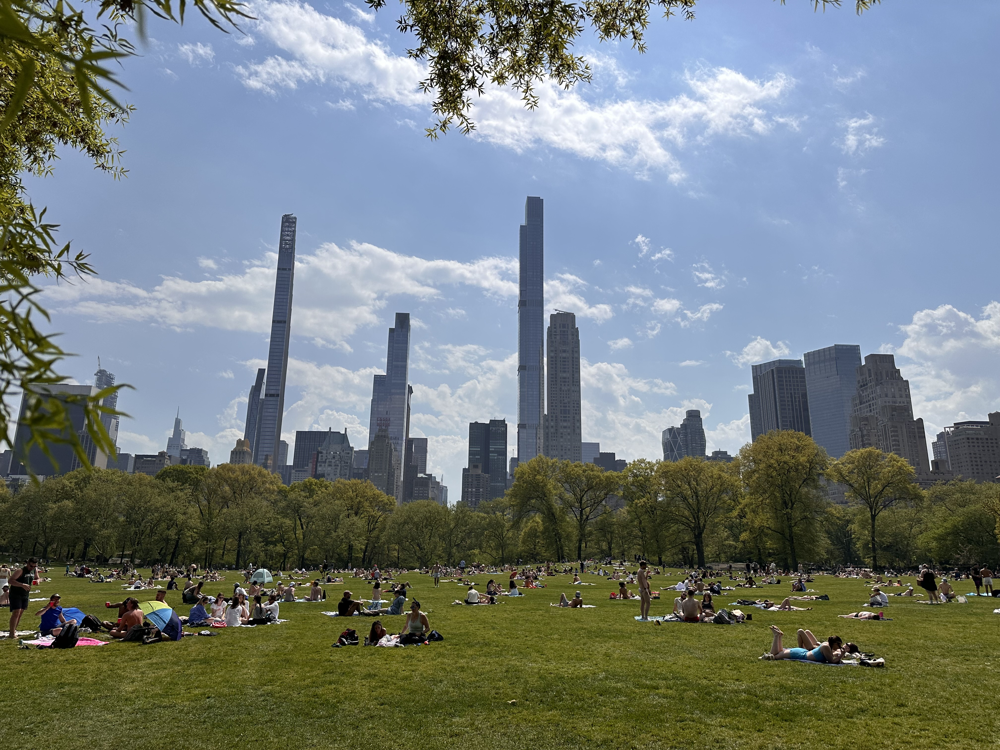
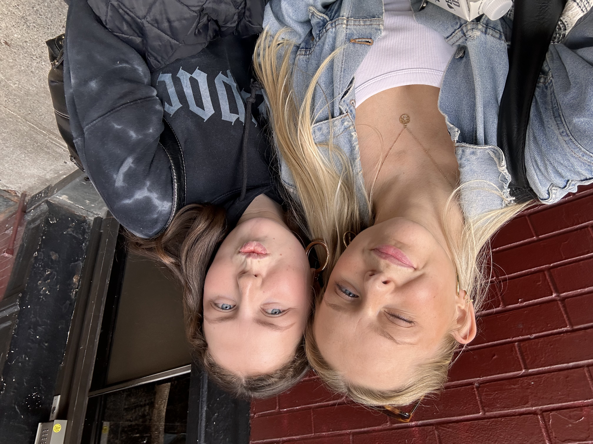

Hej och välkommen! Jag heter Minea, tillsammans med min bästa kompis tillbringade jag två veckor i New York år 2024. Vi var ute och upptäckte Manhattan och Brooklyn hela dagarna och samlade med oss massor av roliga ställen att besöka.


Här hittar du tips på ställen att gå till inför din nästa New York resa! Allt från prisvärda restauranger, hidden gems, gratis aktiviteter och en o annan Sex and the City sightseeings...
Enjoy!